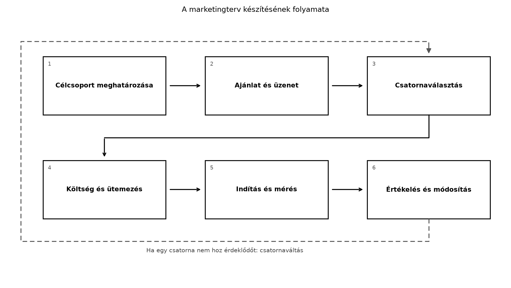
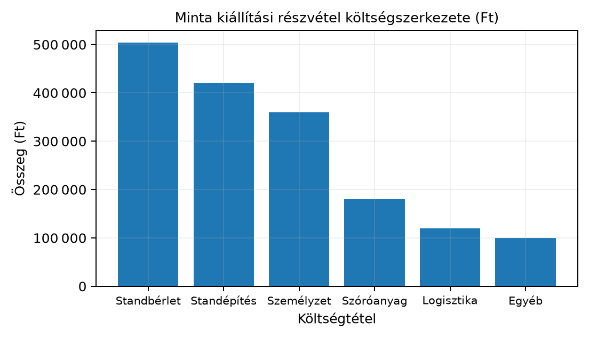

Egy asztalosműhely hiába készít pontos, szép bútorokat, ha a potenciális megrendelő nem tud róla. A szakma tanulása során a technikai minőség mellett meg kell tanulni bemutatni a munkát: fotóval, honlappal, ajánlással, kiállítással. Sok kezdő vállalkozó abba a hibába esik, hogy csak a műhelyben dolgozik, és arra vár, hogy majd „a munka eladja magát”. A vásárló azonban előbb a bemutatkozó oldalt, a referenciát vagy a kiállítási standot látja, és csak azután rendel. Ez az alfejezet arra készít fel, hogy az asztalosvállalkozás marketingjét egyszerű, mérhető és költségvetésben tervezhető módon építsd fel, és a vásári megjelenést ne ad hoc kapkodásként, hanem előkészített projektként szervezd.
Képzeld el, hogy az asztalos műhelyébe betér egy lakberendező. A műhelyben rend van, a munkadarabok precízek, a gépek tiszták. A polcon ott áll egy kész konyhaszekrényajtó, a fal előtt egy asztallap. Az asztalos telefonnal lefényképezi, felteszi a közösségi oldalára, és egy hét múlva három érdeklődő is hívja. Az egyik azért, mert a barátja megosztotta a fotót, a másik a céges honlapon talált referenciát, a harmadik egy kiállításon látott hasonló munkát. A marketing nem varázslat: láthatóvá tenni a valós minőséget, és érdeklődőt formálni belőle.
Definíció. A marketing egy vállalkozás azon tevékenysége, amely az ügyfél igényének feltárásától a megfelelő termék vagy szolgáltatás kialakításán át a vevő megtalálásáig, meggyőzéséig és megtartásáig tart. Asztalosvállalkozásnál a marketing célja: a megfelelő vevő (például lakásfelújító család, kivitelező partner, belsőépítész) megfelelő időben és csatornán találkozzon a vállalkozás ajánlatával.
Definíció. A marketingkommunikáció a vállalkozás üzeneteinek célzott eljuttatása a célcsoporthoz. Ide tartozik a reklám, a promóció, a személyes értékesítés, a közösségi média és a kiállítás. A promóció olyan rövid távú ösztönzés, amely vásárlásra vagy érdeklődésre buzdít (például „első felmérés ingyenes”, „kiállítási kedvezmény”). A reklám fizetett, közvetlen megjelenés (hirdetés, szponzorált poszt, hirdetőtábla), amely a vállalkozást vagy termékét mutatja be.
Definíció. A portfólió a vállalkozás referenciamunkáinak bemutatott gyűjteménye, célzottan rendezett fotókkal, rövid leírásokkal, műszaki adatokkal. A referencia egy korábban elvégzett munka bizonyítéka, lehet fotó, ügyféltörténet, vélemény vagy elérhető helyszín.
Definíció. A lead (érdeklődő) olyan kontakt, aki már jelezte érdeklődését – megadta telefonszámát, e-mailjét, írt üzenetet –, de még nem biztos vevő. A marketing egyik fő célja a lead létrehozása, mert onnantól a személyes, szakmai értékesítés folyhat.
Szabály. A marketingüzenet nem lehet félrevezető: a reklám és a promóció nem állíthatja, hogy egy lapra szerelt bútor „tömör tölgy tömörfa”, ha valójában csak furnér vagy fólia. A tisztességtelen kereskedelmi gyakorlat tilalma és a fogyasztóvédelemmel kapcsolatos szabályok (a pontos jogszabályhely ellenőrizendő) erre vonatkoznak. Ugyanígy a vevők fotójának, nevének, lakásának közzététele előtt írásos hozzájárulást kell kérni, az adatvédelem (GDPR, ellenőrizendő) miatt. (Lásd a Szerződéskötés, garancia, megrendelő, szállítólevél és számla alfejezetet is.)
Szabály. Marketing csak mérhetően működtethető. A marketingtervnek tartalmaznia kell: cél, célcsoport, üzenet, csatorna, költség, ütemezés, és legalább egy mérőszám (például weboldal-látogatók száma, megkeresések száma, vásárnapon begyűjtött névjegyek száma). Enélkül nem tudod megmondani, mi hozta a munkát, és mi volt pénzkidobás.
Az alábbi lépéssor egy asztalosvállalkozás éves vagy negyedéves marketingtervéhez használható. A lépéseket Üzleti terv, piackutatás, piacképesség piackutatási eredményeire építjük; ha nincs piackutatás, először azt pótold.
Recept. Kis asztalosvállalkozás marketingterve

A folyamatábra hat lépésből áll; a 6. lépésből visszacsatoló nyíl mutat a 3. lépésre (csatornaválasztás), ha egy csatorna nem hoz érdeklődőt.
Az alábbi két kidolgozott példa mintaadatokat használ. A cél a számolás menetének bemutatása.
Egy egyéni vállalkozó asztalos a következő havi marketingköltségeket tervezi (minden összeg nettó, ÁFA nélkül, mintaár; alanyi adómentes vállalkozónál a bruttó összeggel számolj):
| Költségtétel | Összeg (Ft/hó) | Megjegyzés |
|---|---|---|
| Karbantartott honlap tárhely + domain, havi díj | 4 500 | céges e-mail |
| Közösségi média hirdetés | 25 000 | célzott, helyi |
| Fotós havi egy alkalom | 35 000 | 30–40 kép |
| Nyomtatott árajánlatmappa, névjegy | 8 000 | 50 db |
| Összesen | 72 500 | – |
Kérdés: mennyi a havi teljes marketingköltség, és mekkora fedezeti hozzájárulást kell hoznia ahhoz, hogy elmondhassuk: a marketingre költött minden forint legalább nullszaldós legyen? Tegyük fel, hogy egy asztalos megbízás átlagos fedezeti hozzájárulása (nettó ár − anyag- és közvetlen bérköltség, lásd Üzleti terv, piackutatás, piacképesség) 85 000 Ft.
Számítás: A marketingköltség fedezéséhez szükséges havi megrendelések száma:
Ez azt jelenti: ha a marketing hatására legalább 1 darab átlagos fedezetet hozó munkát szerez, a havi marketingköltség megtérül. Ha három ilyen munkát hoz, akkor a marketing jól teljesít. Ez persze leegyszerűsítés, mert a fedezet nem tiszta nyereség, de mutatja a gondolkodásmódot.
Ellenőrzés. Ha a marketing havonta 4 leadet hoz, és abból 1 válik megrendeléssé, akkor a fedezeti hozzájárulás 85 000 Ft, ami nagyobb, mint 72 500 Ft, a marketing hozzájárul a működéshez. Ha 0 megrendelés, akkor a marketing rossz. ∎
Az asztalos egy 3 napos lakberendezési szakkiállításon szeretne megjelenni. A stand mérete 12 m². Az alábbi mintaárak (ellenőrizendő: a kiállítás szervezőjének aktuális árai) alapján számolunk:
| Költségtétel | Mennyiség | Egységár (Ft) | Összeg (Ft) |
|---|---|---|---|
| Standbérlet | 12 m² | 42 000/m² | 504 000 |
| Standépítés, installáció (sima, saját) | 1 csomag | 420 000 | 420 000 |
| Személyzet (2 fő, 3 nap) | 6 embernap | 60 000/nap | 360 000 |
| Szóróanyag, névjegy, mintakártya | 300 db | 600 | 180 000 |
| Logisztika, szállítás, biztosítás | 1 tétel | 120 000 | 120 000 |
| Helyszíni hirdetés, extra konnektor, takarítás | 1 tétel | 100 000 | 100 000 |
| Összesen | – | – | 1 684 000 |
Kérdés: hány átlagos, 85 000 Ft fedezeti hozzájárulású munkát kell a vásárból szerezni ahhoz, hogy a kiállítás költsége megtérüljön?
Számítás:
Tehát körülbelül 20 darab átlagos megbízás kell ahhoz, hogy a vásár önmagában megtérüljön. Ez egy kis műhelynek nagyon magas lehet, ezért a kiállítást nem feltétlenül a rövid távú értékesítés miatt vállaljuk, hanem hosszú távú ismertség, partneri kapcsolat és referenciaszerzés miatt. Ha a vásáron a két fő összegyűjt 120 érdeklődő kontaktot, és abból 12 megrendelő lesz az év során, akkor ez 12 · 85 000 = 1 020 000 Ft fedezetet hoz – az 1 684 000 Ft-os költségnek csak kb. 61 %-át. A különbséget (664 000 Ft) csak a későbbi ajánlások és partneri munkák hozhatják be; ezért a kiállítást befektetésként kell kezelni, és csak tartalék költségkeretből szabad vállalni.
Ellenőrzés. Összehasonlítjuk a kiállítási költséget az előző példa havi marketingkeretével: 1 684 000 Ft / 72 500 Ft/hó ≈ 23,2 hónapnyi havi marketingköltség. Ez is mutatja, hogy a vásár drága, ezért csak akkor menj, ha van rá költségvetés, cél és utókövetési terv. ∎

A vásár olyan rendezvény, ahol több kiállító – gyakran egy szakmából – közönség előtt mutatja be termékeit, szolgáltatásait. A kiállítás hosszabb távú, gyakran tematikus bemutató, amely lehet múzeumi vagy szakmai jellegű. A faiparban és lakberendezésben a vásár kettős célú: a végső fogyasztó megismeri a friss termékeket, és a szakmai látogatók (belsőépítész, kivitelező, kereskedő) beszállítót, partnert keresnek.
Az asztalosvállalkozás számára a vásári megjelenés fő lehetőségei:
A faipari szakkiállításon – ilyen lehet például a lakberendezési vagy bútoripari szakvásár (a pontos nevek és időpontok ellenőrizendők) – az asztalos a saját műhelyének munkáiból készít válogatást, de informálódhat is: faanyagkereskedők, gyártók, vasalatforgalmazók standján megnézheti az új anyagokat. Fontos, hogy ne csak nézelődni menj, hanem céllal.
A kiállítási részvétel projekt, nem egy napos kirándulás. A fő szervezési lépések:
Recept. Kiállítási részvétel tervezése
Figyelem. A kiállítási részvétel tűz- és balesetvédelmi előírásai a rendezvény helyszínétől függnek. A standhoz használt elektromos berendezéseknek, hosszabbítóknak szabványosnak kell lenniük; a csomagolóanyagot a kiürítési útra tilos elhelyezni. A pontos követelményeket a szervező írja elő.
A portfólió az asztalosvállalkozás leghatékonyabb eszköze. A fotó nemcsak dekoráció, hanem műszaki bizonyíték. A portfólió készítésének fő lépései:
Recept. Portfólió és referenciafotó készítése
portfólió/konyha,
portfólió/ajtó, portfólió/asztal. A weboldalra
és a közösségi médiára így gyorsan lehet válogatni.Szabály. A referenciafotókra is igaz: a kép fájl eredeti szerzője (a fotós) jogosult a felhasználás engedélyezésére. Ha nem te készítetted a képet, a felhasználási jogot írásban kell tisztázni. A saját fotódat is feltöltheted, de a vevő hozzájárulását nem pótolja.
A marketing és a kiállítás minőségét az eredmények mutatják. Ellenőrizd:
| Mit | Mivel | Tájékoztató elvárás |
|---|---|---|
| Honlap és közösségi csatornák frissessége | havonta egy átnézés | legalább 2 új poszt/hó |
| Lead-ek száma | ügyfélnapló, táblázat | minimum 2–3 új megkeresés/hó |
| Egy lead megszerzési költsége | (összes marketingköltség)/(lead-ek száma) | a célhoz képest csökkenő vagy elfogadható |
| Kiállítási névjegyek és lead-ek | lead-lista a kiállításon | a vásár célja szerint (pl. 50 db) |
| Utókövetés határideje | határidőnapló | 3 munkanapon belül minden ígéretes lead |
| Portfólió és fotók jogi háttere | hozzájárulások dossziéja | minden közzétett képhez van engedély |
Ha egy csatorna nem hoz leadet, a marketingterv 6. lépése szerint módosíts. Semmiképp ne költs tovább vakon.
Hiba: A vállalkozó egyszerre indít hirdetést a közösségi médiában, készíttet honlapot, szórólapot és vásárra is nevez, de nincs célcsoport-meghatározás. Ok: türelmetlenség, „minél több csatorna, annál jobb” tévhit. Helyes gyakorlat: előbb piackutatás, célcsoport, utána 2–3 csatorna, mérés.
Hiba: A honlapon csak egy cím és telefonszám van, nincs referenciakép, nincs bemutatkozó szöveg, nincs árajánlatkérési lehetőség. Ok: alábecsülik a fotózás és a szövegírás fontosságát. Helyes megoldás: portfólió, rövid történet, elégedett ügyfél-idézet, független referencialink.
Hiba: A vásárra a vállalkozó saját, napi használatú bútorait viszi, nincs standterv, nincs elegendő szóróanyag, és kifogy a névjegyből. Ok: a kiállítást „kirándulásként” kezelik, nem projektként. Helyes gyakorlat: standterv, leltár, beosztás, utókövetési listás jegyzetfüzet.
Hiba: A referenciafotókon látszik a rendetlen lakás, a vevő neve vagy utcája, és nem kértek hozzájárulást. Ok: a fotózás gyors, kapkodó, nincs adatvédelmi tudatosság. Helyes megoldás: üres, tiszta környezetben fotózz, a cím és a név nélkül, írásos engedéllyel.
Hiba: A kiállítás után az összegyűjtött névjegyeket nem viszik fel semmilyen nyilvántartásba, és nem követik őket. Ok: nincs utókövetési terv, a vásár elfáraszt. Helyes gyakorlat: a standon azonnal írj fel minden érdeklődőt, és a vásárt követő héten foglalkozz velük.
Egy kezdő asztalosvállalkozó először vesz részt egy lakberendezési vásáron. A standbérletet kifizeti, de spórol a standépítésen: egy asztalra pakolja ki a fényképeket. A stand szögletében áll egy kész éjjeliszekrény, de nincs rajta ár, anyagleírás, és nincs szabad hely a beszélgetéshez. A nap végén elfogy a névjegy, az érdeklődők telefonszámait egy papírra jegyzik, amit a szél elvisz. A vásár után nincs utánkövetés. A vállalkozó úgy értékeli, hogy a vásár nem hozott semmit, pedig volt 40 érdeklődő. A következő évben standtervet készít, egy asztalt tesz a sarokba, szórólappal és mintaanyagokkal, a standfalon nagyban kiállítja a három legjobb referenciaképet, és két embert visz. A névjegyeket egy irattartóba gyűjti, a vásár után mindenkit felhív. A vásárt követő hónapban 6 árajánlatkérés érkezik, abból 2 megbízás lesz. A tanulság: a vásár akkor működik, ha a stand és az utókövetés is működik.
Válaszolj röviden, indoklással. A válaszok a következő részben találhatók.
1. feladat (A)
Határozd meg a marketing, a promóció és a portfólió fogalmát egy-két
mondatban.
2. feladat (A)
Egy asztalos havi marketingköltsége 60 000 Ft. Az átlagos megrendelés
fedezete 90 000 Ft. Hány megrendelés szükséges havonta, hogy a marketing
költsége visszajöjjön?
3. feladat (B)
Egy kiállítási részvétel költsége 1 250 000 Ft. Az átlagos fedezet 100
000 Ft/munka. Mennyi munkát kell szerezni a kiállításból, hogy
nullszaldós legyen? Ha a vállalkozó a vásáron 80 leadet gyűjt, és a
lead-ek 15%-a lesz valódi megrendelő, akkor megtérül-e a kiállítás?
4. feladat (B)
Tervezz meg egy 2 napos szakvásári megjelenés költségvetését a következő
adatokkal: standbérlet 40 000 Ft/m², stand 10 m², standépítés 300 000
Ft, személyzet 2 fő, napi 55 000 Ft/fő, szóróanyag 250 db, 500 Ft/db,
logisztika 80 000 Ft, extra 60 000 Ft. Számold ki a teljes költséget, és
adj becslést, hány 90 000 Ft fedezetű munkát kell elérni.
5. feladat (C)
Egy asztalos honlapján van 12 referenciakép, de egyik alatt sincs
leírás, nincs a kép készítésének ideje, és a fotók között van olyan,
ahol a vevő lakcíme is látszik a kaputelefonon. Milyen hibákat
azonosítasz, és mit javítanál? Jogi szempontból mi a teendő?
6. feladat (D)
Készíts egy rövid marketingterv egy éves asztalosvállalkozásnak, amely
kizárólag beépített szekrényeket készít. Határozd meg a
célcsoportot, a fő üzenetet, két csatornát, a havi tervezett
marketingköltséget, és egy mérőszámot. Készíts hozzá egyszerű havi
bontású költségtáblázatot (mintaárak).
1. feladat (A)
Marketing: a vállalkozás azon tevékenysége, amely a vevői igény
feltárásától a termék/szolgáltatás kialakításán, megismertetésén és
értékesítésén át a vevő megtartásáig tart. Promóció: rövid távú
vásárlásösztönzés (akció, kedvezmény). Portfólió: a referenciamunkák
rendezett, célzott gyűjteménye fényképekkel, leírásokkal, műszaki
adatokkal.
2. feladat (A)
n_min = 60 000 Ft / 90 000 Ft/db = 0,67 db, azaz havonta
legalább 1 megrendelés kell a marketingköltség megtérüléséhez.
3. feladat (B)
Nullszaldóhoz szükséges munkák:
1 250 000 Ft / 100 000 Ft/db = 12,5, tehát 13 darab. Ha 80
lead van és 15% válik vevővé: 80 × 0,15 = 12 megrendelő. A
12 kisebb, mint 13, ezért a kiállítás önmagában nem térül meg, de nagyon
közel van; ha a lead-ek 16%-a vásárolna, az már 12,8 ≈ 13 munka lenne. A
gyakorlatban a hosszú távú hatást is értékelni kell.
4. feladat (B)
Standbérlet: 10 m² × 40 000 Ft/m² = 400 000 Ft.
Személyzet:
2 fő × 2 nap × 55 000 Ft/fő/nap = 220 000 Ft.
Szóróanyag: 250 db × 500 Ft/db = 125 000 Ft.
Összes költség:
400 000 + 300 000 + 220 000 + 125 000 + 80 000 + 60 000 = 1 185 000 Ft.
Szükséges munkák: 1 185 000 / 90 000 = 13,17, azaz 14
munka.
5. feladat (C)
Hibák: nincs képaláírás, nincs méret- vagy anyagleírás, nincs dátum,
nincs jogi hozzájárulás; a kaputelefonon látszó lakcím személyes adat.
Javítás: minden kép alá adatok, fotót a lakcím eltakarása nélkül ne
tegyünk ki; kérjünk utólag írásos hozzájárulást, vagy szedjük le a
képet; a nem engedélyezett képeket töröljük.
6. feladat (D)
Példamegoldás:
Marketingterv vázlat – Beépített szekrények
| Tétel | Havi összeg (Ft) |
|---|---|
| Honlap fenntartás | 5 000 |
| Hirdetés közösségi médiában | 25 000 |
| Fotós havi egy alkalom | 30 000 |
| Nyomtatott anyag | 5 000 |
| Összesen | 65 000 |
A marketing az asztalosvállalkozás működésének összegzése: a célcsoport, az üzenet, a csatorna, a költség és a mérés együtt alkotja a növekedés tervét. A marketingkommunikáció eszközei közé tartozik a reklám, a promóció, a honlap, a közösségi média, a referencia, az ajánlás és a vásár. A portfólió és a referenciafotók a legerősebb bizonyítékok, de csak írásos hozzájárulással, tiszta környezetben és műszaki adatokkal működnek. A vásár és kiállítás drága, projektként kell tervezni: standbérlet, standépítés, személyzet, szóróanyag, logisztika, utókövetés. A megtérülési küszöb kiszámítható: a teljes költséget elosztjuk az átlagos fedezettel. Ez a szemlélet készíti elő a vállalkozás bemutatását a vizsgaremeknél és a záró dokumentációban, mert a szakmai tudás mellé a bemutatás képességét is bizonyítani kell. ∎